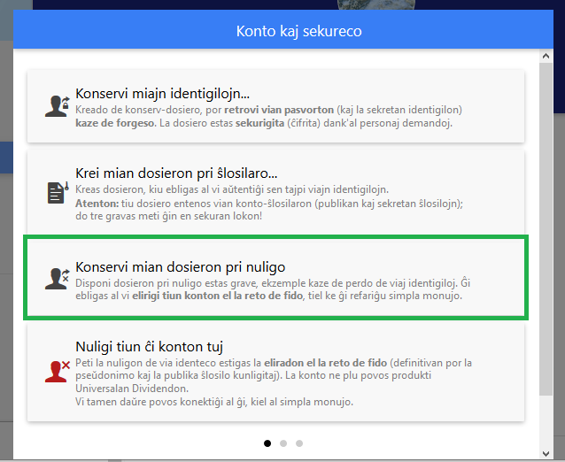

Kiel ne esti eksigita de la komunumo Ğ1 kaze de ŝtelo de via konto?
Estas tri manieroj esti eksigita de la Ğ1:
-
1. Vi malobservas la licencon Ğ1, ekzemple provante krei plurajn membro-kontojn por sama persono (vi aŭ iu alia)
-
La novaĵo disvastiĝos tra la komunumo vi neniam plu estos atestita. Vi perdos la monkreadon dum la tuta vivo, ene de la Ğ1, kaj eĉ probable ene de aliaj liberaj valutoj.
-
2. Kodrompisto divenas viajn identigilojn
-
Kodrompisto divenas viajn identigilojn kaj uzas ilin por malobservi la licencon Ğ1 (plejtipe, li kreas falsajn identecojn). Se vi ne rapide ekkomprenas (ene de 5 tagoj ideale), ke iu alia ol vi atestis identecojn, vi fariĝas komplico pri malobservado de la licenco Ğ1, kaj vi povas retroviĝi eksigita de la Reto de Fido. Tial estas tiel riske perdi siajn identigilojn.
-
3. Vi forgesas viajn identigilojn
-
Vi povas rekrei konton "simplan monujon" kaj daŭre uzi la Ğ1, sed vi ne plu profitas monkreadon (la UD) ĝis la fino de via aliĝo (tiu periodo povas daŭri 2 jarojn).
La dosiero pri nuligo
La dosiero pri nuligo ebligas eviti la malagrablaĵojn okazigitaj de la punktoj 2 kaj 3.
La dosiero pri nuligo ebligas al vi malaktivigi vian konton, kaze de entrudiĝo en vian konton aŭ de forgeso de viaj identigiloj.
Por krei vian dosieron pri nuligo, iru en "Mia konto" poste "Kromeblecoj" kaj poste "Konto kaj sekureco".
Fine alklaku "Konservu mian dosieron pri nuligo":

Cesium tiam petos de vi tajpi viajn identigilojn, kaj poste proponos al vi registri vian dosieron pri nuligo laŭ la formato .txt.
Vi devas printi tiun dosieron .txt kaj konservi ĝin en sekura loko.
Vi ankaŭ povas estigi QR-kodon pri nuligo per tiu dosiero .txt, kio ebligos al vi pli facile nuligi vian konton, se iam ĝi estos kodrompita.